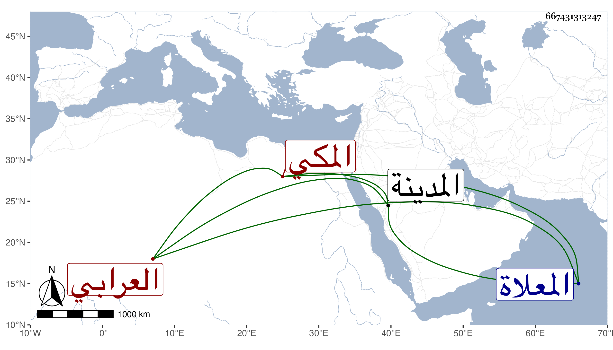

0902Sakhawi.DawLamic.ITO20230111-ara1.EIS1600.667431313247
Biography ID: 667431313247
364
ستيت ابنة الشيخ عبد الله بن الشيخ الكبير عمر العرابي المكي زوج السراج معمر المالكي وأم أولاده كانت خيرة جاورت مع زوجها بالمدينة النبوية غيرة مرة ، وماتت في عصر يوم الجمعة رابع عشر رمضان سنة ثمان وثمانين ودفنت من الغد بتربة جدها من المعلاة وتأسف زوجها عليها كثيرا عوضها الله الجنة .
